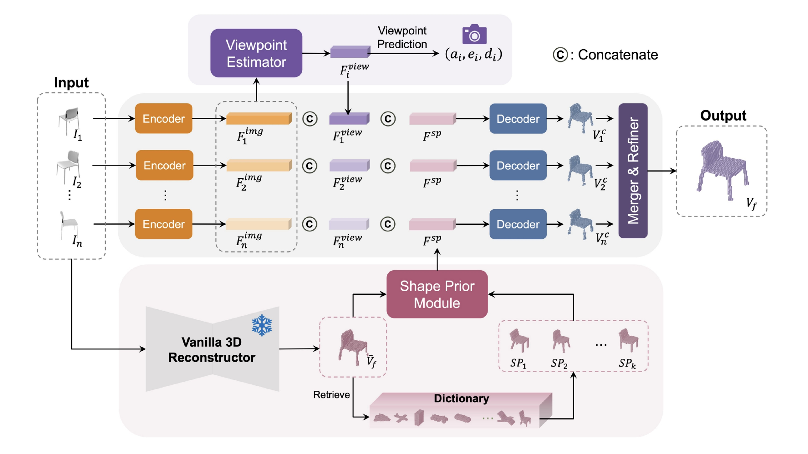
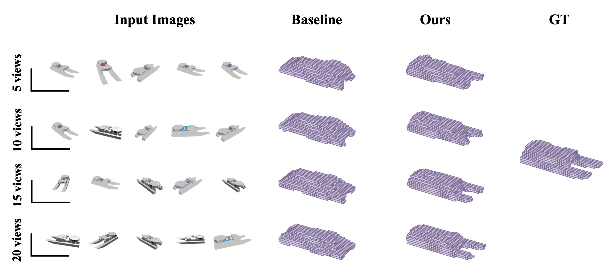
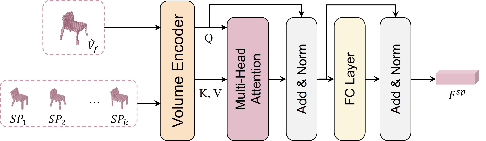
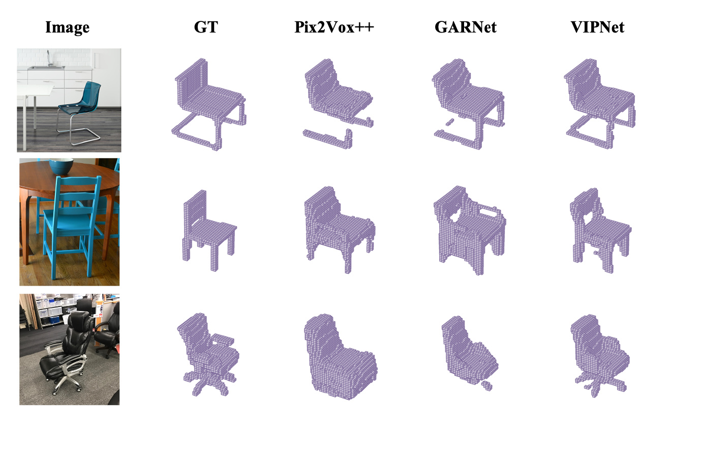

Abstract
Overview
Existing multi-view reconstruction methods often fuse image features without explicitly using camera viewpoint, making it difficult to associate corresponding object parts. VIPNet introduces a viewpoint estimator that provides geometric context to each view and a shape-prior module that retrieves category knowledge when only a few observations are available. The resulting network reconstructs high-quality 3D point clouds in a single forward pass and generalizes to real-world images.
01 · Figure
VIPNet explicitly estimates camera viewpoints to associate features across views and retrieves shape priors to compensate for sparse observations, enabling fast and accurate 3D reconstruction.

02 · Figure
Why Viewpoint Matters

03 · Figure
Shape-Prior Retrieval

04 · Figure
Real-World Generalization

Citation
BibTeX
@inproceedings{ye2024vipnet,
title={{VIPNet}: Combining Viewpoint Information and Shape Priors for Instant Multi-view 3D Reconstruction},
author={Ye, Weining and Li, Zhixuan and Jiang, Tingting},
booktitle={Proceedings of the Asian Conference on Computer Vision},
pages={3379--3395},
year={2024}
}